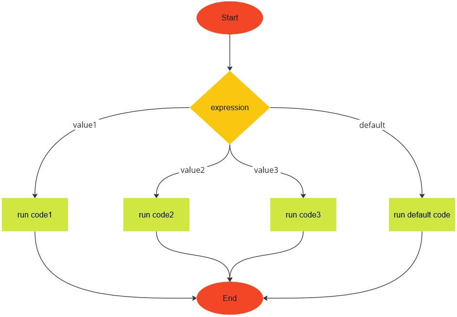

So many choices
You want to make more decisions? Is that a "yes", no? JavaScript provides three more ways for your program to make decisions, each of which is suitable for various specific situations. See whether you can use the JavaScript statements presented in this section to simplify or make your code more readable.
Ternary operator
Sometimes you find yourself writing short if...else statements such as the
following:
// caturday.js
/**
* Is it Caturday yet?
*
* @param {NS} ns The Netscript API.
*/
export async function main(ns) {
const today = "Saturday";
if (today === "Saturday") {
ns.tprintf("It's Caturday.");
} else {
ns.tprintf("Not Caturday.");
}
}
JavaScript provides the
ternary operator
to help you simplify your short if...else statements. The ternary operator is
structured as follows:
condition ? codeIfTrue : codeIfFalse;
The condition should be an expression that evaluates to either true or
false. If condition evaluates to true, then whatever code is in
codeIfTrue would be executed. Otherwise, code in codeIfFalse would run. For
example, you can replace the code snippet:
if ("a" === "a") {
ns.tprintf("A");
} else {
ns.tprintf("Not A.");
}
with the one-liner:
"a" === "a" ? ns.tprintf("A") : ns.tprintf("Not A.");
The result of the ternary operator can be saved for later use. All you need to
do is ensure each of codeIfTrue and codeIfFalse returns some kind of value.
As another example, you can simplify the above if...else statement as
const result = "a" === "a" ? "A" : "Not A.";
ns.tprintf(result);
Should you be using the ternary operator instead of an if...else statement?
Maybe yes, maybe no. Ask yourself this question: If I replace an if...else
statement with a ternary operator, would the resulting code be readable to me
and/or other people? Readability is important in computer programming. You write
code not only for a computer to run, but also for other humans to read as well.
Prioritize readability as much as possible, unless you have a reason to the
contrary.
if...else if...else
According to this page, a kitten is a cat from birth to six months in human time. From seven months to two years, a cat is known as a junior. The next stage is prime, i.e. between three and six years. The cat enters the mature stage starting from seven years and ends at 10 years.
Sam wants to translate the above description into JavaScript code. Fortunately,
JavaScript allows the if and if...else statements to be chained to help us
code complex decisions into our programs. The chaining takes the following
structure:
if (condition1) {
// run code1
} else if (condition2) {
// run code2
} else if (condition3) {
// run code3
} else {
// run code4
}
The structure of the if...else if...else statement is illustrated in the image
below:
You can have as many else if blocks as you want. Sam uses the above structure
to write a program about the lifespan of Tabby:
// lifespan.js
/**
* Tabby's lifespan.
*
* @param {NS} ns The Netscript API.
*/
export async function main(ns) {
const age = 2;
const name = "Tabby";
if (0 <= age && age <= 0.5) {
ns.tprintf(`${name} is a kitten.`);
} else if (0.5 < age && age <= 2) {
ns.tprintf(`${name} is a junior.`);
} else if (2 < age && age <= 6) {
ns.tprintf(`${name} is in the prime stage.`);
} else if (6 < age && age <= 10) {
ns.tprintf(`${name} is a mature.`);
} else {
ns.tprintf("More than a decade with Sam.");
}
}
switch
In the previous section, Sam chained together a bunch of if and if...else
statements to categorize Tabby into one of several life stages. Let's consider
the reverse situation. Suppose the life stage of Tabby is known. How would Sam
determine the age range (in human years) of Tabby?
By using the
switch
statement, of course. One version of the switch statement has the following
structure:
switch (expression) {
case value1:
// run code1
break;
case value2:
// run code2
break;
...
case valueN:
// run codeN
break;
default:
// run default code
}
The structure of the switch statement is illustrated in the image below:

The expression should be valid JavaScript code that evaluates to a value. Each
of value1, value2, and so on should be one among several possible values of
expression. The
break
statement terminates the whole switch statement, i.e. it breaks out of the
switch block. The default block near the end of the switch statement is a
fail-safe for you to handle the situation where expression does not evaluate
to any of the given values. If expression does not evaluate to any of the
expected cases, insert code within the default block for the, umm..., default
result of the switch statement. The default block plays a similar role to
the else block of an if...else statement.
Sam uses the switch statement to map from Tabby's life stage to the
corresponding age range as follows:
// stage-to-age.js
/**
* Tabby's lifespan.
* Life stage to age range.
*
* @param {NS} ns The Netscript API.
*/
export async function main(ns) {
const stage = "junior";
let ageRange = "";
switch (stage) {
case "kitten":
ageRange = "birth to 6 months";
break;
case "junior":
ageRange = "7 months to 2 years";
break;
case "prime":
ageRange = "3 to 6 years";
break;
case "mature":
ageRange = "7 to 10 years";
break;
default:
ageRange = "over 10 years";
}
ns.tprintf(`Tabby's age range: ${ageRange}`);
}
Exercises
Exercise 1. Read more about the ternary operator here.
Exercise 2. What is readable code? Find out more here.
Exercise 3. Use the ternary operator to simplify the
caturday.jsscript.Exercise 4. Use the ternary operator to simplify the following program.
/** * Odd or even? * * @param {NS} ns The Netscript API. */ export async function main(ns) { const n = 8; let parity = ""; if (n % 2 === 0) { parity = "even"; } else { parity = "odd"; } ns.tprintf(parity); }Exercise 5. From 11 to 14 human years, a cat is in its senior stage. The final stage of a cat's lifespan is from 15 years onward, also referred to as the geriatric stage. Extend the scripts
lifespan.jsandstage-to-age.jsto include the above two stages of Tabby's lifespan.Exercise 6. Read more about the
switchstatement here.Exercise 7. According to this site, the number of times a cat should be fed each day can depend on its age. A kitten from birth up to six months old (human time) requires three meals per day. From six months to one year, a cat matures to adulthood and should be fed two times a day. From one year onward, it is OK to feed a cat once a day as long as the cat is healthy. Tabby is currently 2 years old in human time. Translate the above description into JavaScript code to help Sam decide how many times per day to feed Tabby.
Exercise 8. The JavaScript code
const d = new Date().getDay();gives you an integer between 0 and 6, inclusive, that represents the current day of the week. The number 0 means Sunday, 1 corresponds to Monday, 2 represents Tuesday, etc. Write a program to convert the result of the above line of code into the corresponding day of the week. If the current day is Friday, output the string
"Fish and chips"to the terminal. However, if the current day is Saturday, output the string"Caturday, meow"to the terminal.Exercise 9. The JavaScript code
const m = new Date().getMonth();returns an integer between 0 and 11, inclusive, that represents the current month of the year. The number 0 means January, the integer 1 represents February, 2 denotes March, and so on. Write a program that converts the integer value of
mto the corresponding month name and print the month name to the terminal. Also output the number of days of the current month.